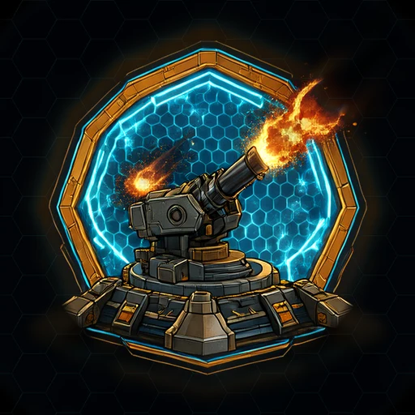
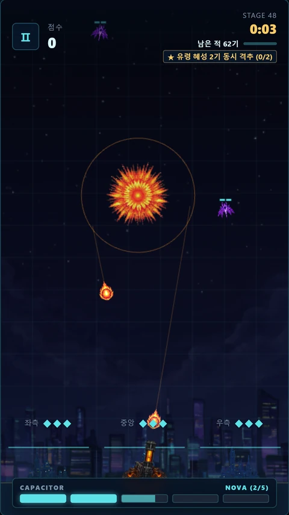
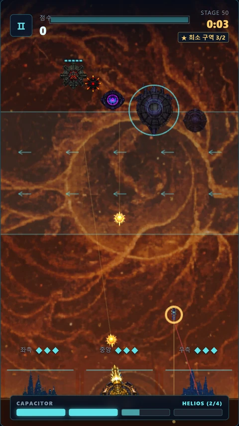
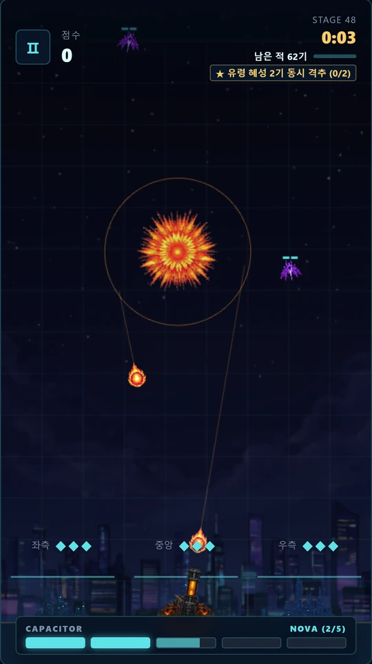
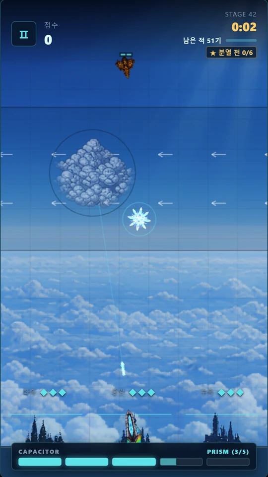
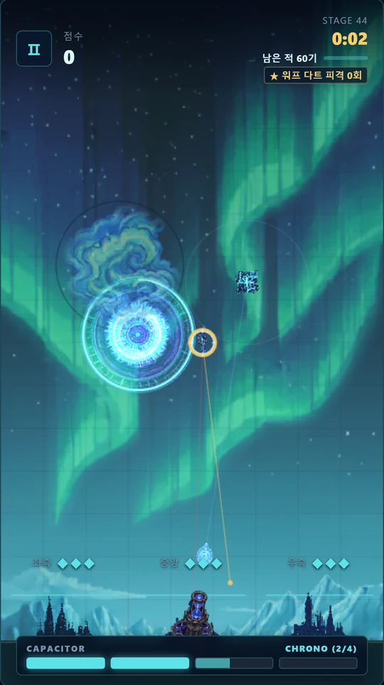
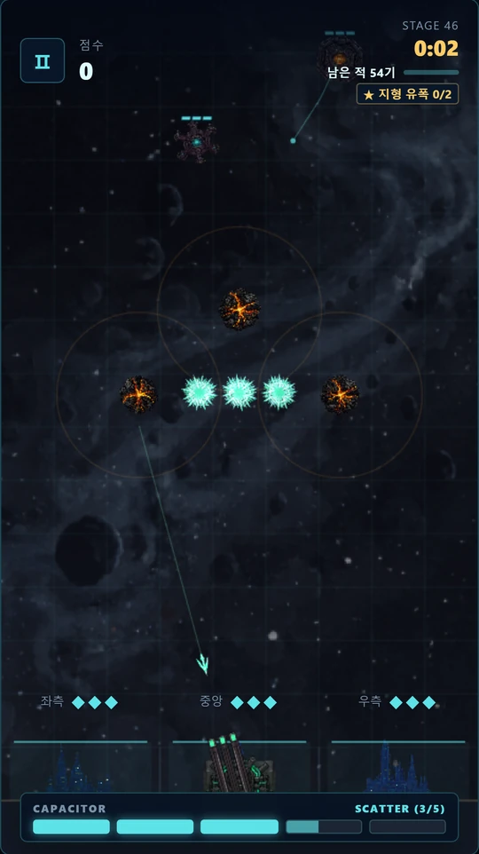
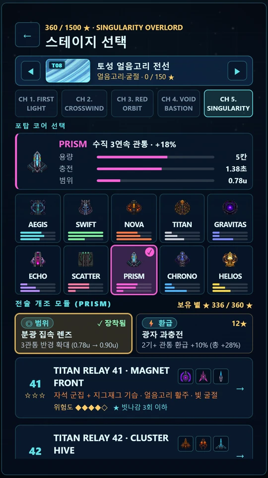
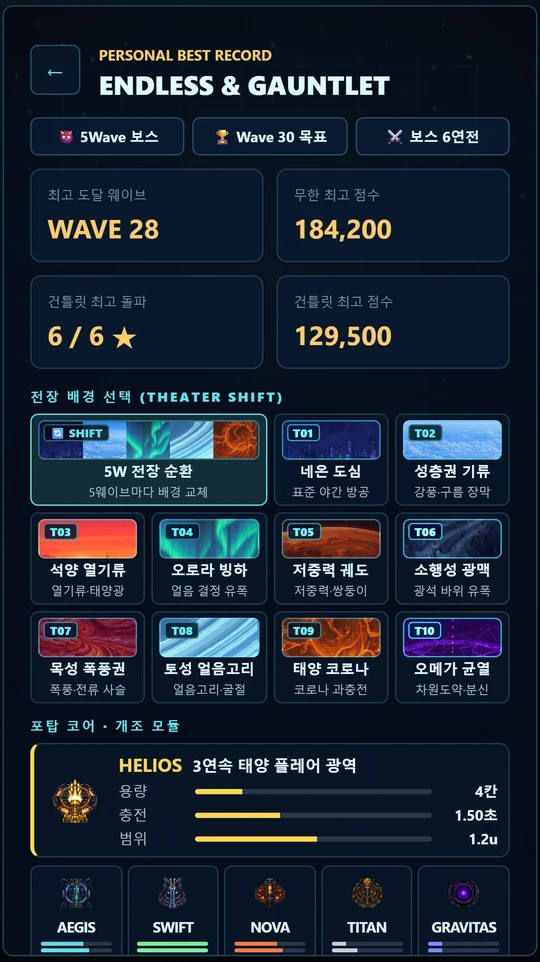

10개 전장 · 500개 스테이지 · 10종 포탑 코어적의 현재 위치가 아니라, 포탄이 닿을 미래 지점을 탭하세요. 퍼지는 방어 파동과 전장 기믹 유폭으로 여러 위협을 한 번에 격추하는 세로형 예측 조준 아케이드입니다.
Tap where threats WILL be. One shield pulse, chained shockwaves, 500 tactical operations.








한정된 에너지를 아껴 쓰세요. 다중 격추와 전장 기믹 유폭에 성공하면 에너지가 즉시 환급됩니다.
Multi-kills and hazard chains refund energy.
Aegis부터 Helios까지, 오직 플레이로 모은 별(★)로 코어와 전술 모듈을 해금하고 조합하세요.
10 cores and 20 tech mods, unlocked purely by play.
네온 도심부터 오메가 차원 균열까지 500개 작전과 무한 방어, 보스 건틀릿이 기다립니다.
10 theaters, 500 stages, Endless & Boss Gauntlet.
질문, 버그 제보, 구매 복원, 개인정보 문의는 이메일로 보내 주세요. 기기 종류와 작전 번호를 함께 적어 주시면 빨리 확인할 수 있습니다.
Email us with your device model and stage number.
기기 안에만 저장됩니다. 앱을 지우면 기록도 지워집니다.
Only on your device. Uninstalling the app deletes it.
설정의 [구매 복원]을 누르면 같은 스토어 계정의 구매가 다시 적용됩니다. 광고 제거는 작전 사이의 자동 전면 광고만 없앱니다. 직접 고르는 보상형 광고는 그대로 남습니다.
Tap Restore Purchases in Settings. Remove Ads removes automatic interstitials only; optional rewarded ads stay.
아니요. 모든 작전, 코어, 모듈은 플레이로만 해금됩니다.
No. Everything unlocks through play.